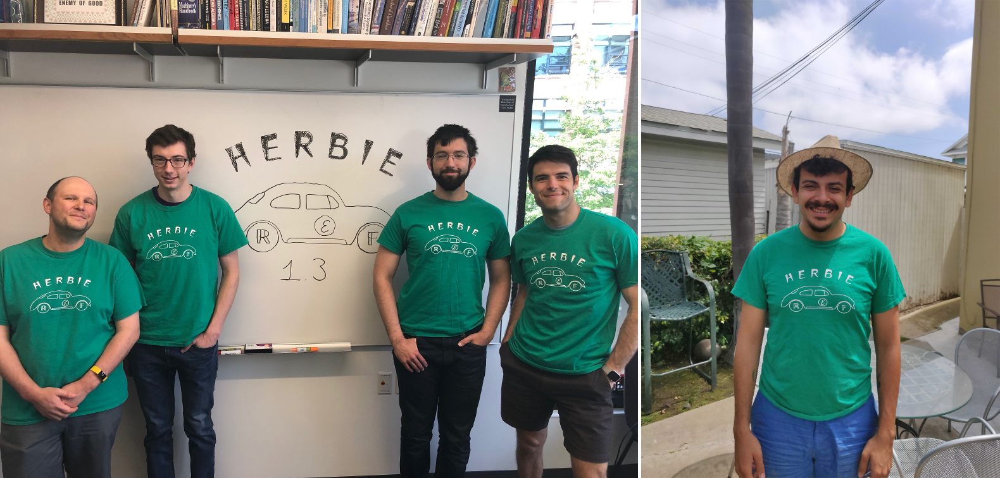

The Herbie developers are excited to announce
Herbie 1.3! This release focuses on speed and
extensibility, including support for posits. Herbie 1.3 is
also nearly twice as fast as Herbie 1.2, and is more accurate at
evaluating rounding error.
Herbie automatically improves the accuracy of floating point
expressions. This avoids the bugs, errors, and surprises that so
often occur when working with floating point. Since
our PLDI'15 paper, we've been hard at
work making Herbie more versatile and easier to use.

Improvement to core algorithm
Herbie now uses a sound interval-based approach to computing
the "ground truth" accurate answer for computations. In rare
cases, this could change Herbie's accuracy estimate for a
program.
Simplification can now simplify exact constant expressions
like (+ 2 2). This should eliminate some noisy arithmetic
in Herbie's output.
Series expansion of pows with constant exponents
is now much faster.
Refactor the implementation of complex numbers so that type checking
is now done exactly once, significantly speeding up the code.
Regime inference is now faster and more accurate. Plus, a few
complex bugs have been eliminated.
Various fixes to simplification and series expansion to fix
rare but large slowdowns.
Beta-quality features
Herbie now supports John Gustafson's
posit format for systems
supported by
the SoftPosit
library.
?
?
Usability improvements
We have a new website!
Hopefully it's a little easier to learn about what Herbie is and
how to use it.
Herbie will now prefer simpler to more complex programs in
several places. This should result in simpler output.
The Herbie shell now indents and breaks lines when it prints
FPCores.
Herbie reports now use KaTeX
to render math in the browser. KaTeX is significantly faster than
MathJax, which we used to use.
You can now middle-click on the arrows on report pages to open
in new tab.
Code Cleanup
Reports now display a quality metric for regime inference.
This should help improve regime inference over time.
The reproduce command now allows rerunning a report.
The timebar in the debug block now separates regime inference
from binary search.
Lots of old, unused code has been deleted, including a lot of
support code for the
obsolete Herbie
Visualizer.
Move a lot of glue code into a single glue file, clarifying
responsibilities for a lot of modules.
Try it out!
We're excited to continue to improve Herbie and make it more
useful to scientists, engineers, and programmers around the world.
We've got a lot of features we're excited to work on in the coming
months. Please
report bugs,
join
the
mailing list,
or contribute.